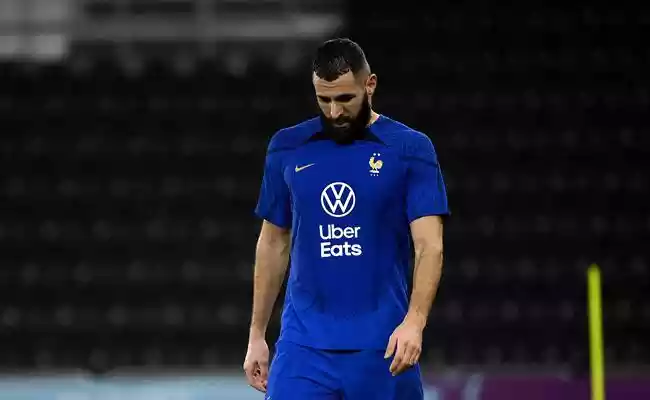

Neymar expõe clima na seleção brasileira para a Copa do Mundo: “A base fundamental”
A seleção brasileira não vive um bom momento apenas dentro das quatro linhas, mas também no clima do vestiário. Os jogadores do elenco comandado por Tite mostram união e companheirismo antes da disputa pelo sonho da Copa do Mundo no Catar.
A admiração e união do elenco fica claro nas entrevistas. Neymar já foi elogiado por alguns companheiros, como Vinícius Júnior e Rodrygo.
“Neymar passou por muita coisa como jovem jogador, tendo que jogar tão jovem e com muita pressão. Então ele é quem garante hoje que tudo seja mais fácil para a nova geração. É muito importante o que ele faz como líder, sabe que nos ajudando também podemos ajudá-lo a fazer uma grande Copa do Mundo. Para nós é um sonho porque crescemos idolatrando ele”, disse o ex-Flamengo. Já Rodrygo relembrou os tempos de Santos:
“É um ídolo para mim, cresci vendo jogar. Sempre ia na Vila [Belmiro] vê-lo jogar. Ele (Neymar) sempre foi um líder, desde a época em que eu estava no Santos – e aqui não é diferente. Passa muita confiança para a gente, os mais jovens que estão começando agora. É um cara fantástico e que é sempre muito bom ter no grupo”, afirmou a estrela do Real Madrid.

Benzema está fora da Copa do Mundo no Catar
Lesão no quadríceps da coxa esquerda tira o atacante do Real Madrid da Copa de 2022, vencedor da Bola de Ouro neste ano, às vésperas da estreia da França
Karim Benzema, atacante do Real Madrid e principal esperança da França na Copa do Mundo de 2022 no Catar, foi cortado após lesionar o quadríceps da coxa esquerda neste sábado (19). A informação foi confirmada pela direção da seleção francesa após ser publicada pelo jornal "Le Parisien". Antes do corte, o jogador já acumulava alguns problemas físicos. Esta foi a sétima vez que o francês precisou parar por conta de lesões no ano.
Vencedor da Bola de Ouro em 2022, Benzema faria seu retorno às Copas do Mundo após ficar de fora em 2018, quando a França foi campeã mundial na Rússia. No entanto, o craque tem sofrido com lesões musculares na atual temporada. Ele fez apenas 12 dos 21 jogos do Real Madrid até a paralisação da temporada para a Copa. Sua última partida foi no dia 2 de novembro, na goleada do time em cima do Celtic, pela Liga dos Campeões.